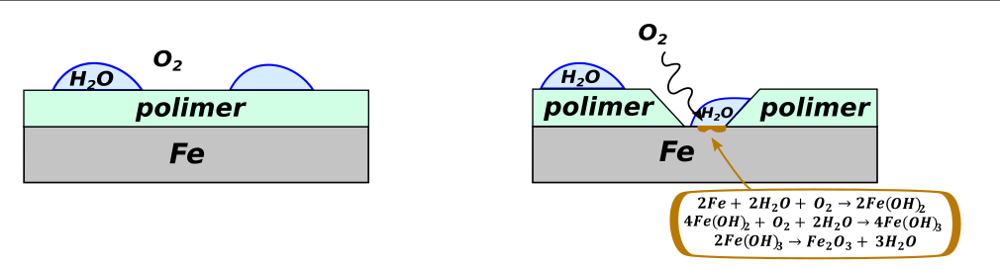
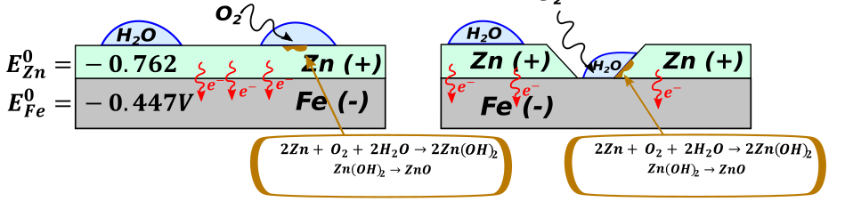
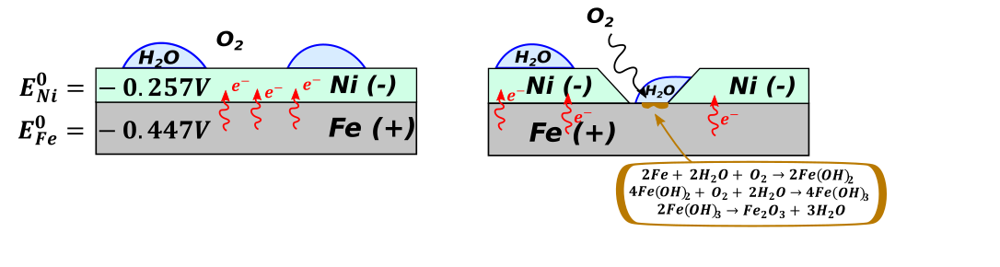

Korozja to proces utlenienia się metalu pod wpływem tlenu atmosferycznego albo innych warunków. Na maturze powinniśmy umieć trzy reakcje korozji żelaza
Rozpad pod wpływem wody
\[2Fe + 2H_{2}O + O_{2} \rightarrow 2Fe(OH)_{2}\]
Kolejno dalsze utlenienie
\[4Fe(OH)_{2} + O_{2} + 2H_{2}O \rightarrow 4Fe(OH)_{3}\]
I ostatni etap, odwodnienie
\[2Fe(OH)_{3} \rightarrow Fe_{2}O_{3} + 3H_{2}O\]
-wilgoć
-obecność tlenu
- temperatura
- zasolenie i obecnosc substancji utleniających.
Oraz ewentualnie rodzaj powłoki ochronnej, o ile jest czyli styk z innymi metali.
W celu zabezpieczenia układu przed korozją stosuje się powłoki ochronne, są one trojga rodzajów.
→ powłoka polimerowa, czyli powierzchnia jest pokryta polimerem (powłoką) organicznym – działa dobrze do momentu jak ta powłoka szczelnnie pokyrwa, a jak zrobi się ryska to powłoka taka działać przestaje.

→ powłoka katodowa – czyli metal pokrywamy innym metalem o potencjale mniejszym niż ten, który jest konstrukcyjny. Przykładem jest ocynk – sam cynk jest bardziej reaktywny od żelaza, czyli wbrew pozorom on będzie korodował szybciej. Ale jednocześnie jeżeli mamy ryske, to zaczyna się dziać rzecz dziwna

Czyli w tym wypadku mimo uszkodzenia powłoki, reakcja przebiega dalej z powłoką, a nie z konstrukcją . Czyli uszkodzona powłoka dalej chroni konstrukcje, ale sama jest bardziej podatna na korozje nawet w momencie w którym jest cała. Takiej powłoki używamy do rzeczy użytkowych, czyli np. Wiadro, bo i tak jak jej kupimy to je rzucimy w kąt przy studni, nie przejmując się szczególnie jego stanem
→ powłoka anodowa – czyli metal pokrywamy innym metalem o potencjale większym niż ten, który jest konstrukcyjny. Przykładem jest onikiel (czyli te wszystkie rzeźby metalowe do ogródka) – sam nikiel jest mniej reaktywny od zelaza czyli wbrew pozorom on będzie korodował wolniej. Ale jednocześnie jeżeli mamy ryske, to zaczyna się dziać rzecz dziwna

Czyli w tym wypadku uszkodzenia powłoki, reakcja przebiega dalej na konstrukcji, a powłoka dodatkowo wyciąga elektrony co powoduje dodatkowe przyśpieszenie korozji kostrukcji – czyli najgorzej jak się da. Uszkodzona powłoka niszczy konstrukcje, ale sama jest mniej podatna na korozje nawet w momencie, w którym jest cała. Świetnie zatem działa jako ochrona przed korozją nieuszkodzona, dodatkowo powłoka ładnie wygląda – metale o wysokim potencjale zwykle mają ładne metaliczne połyski. Takiej powłoki używamy do rzeczy ozdobnych, czyli np. Ozdobna rzezba, bo i tak jak jej kupimy to ją postawimy tak, żeby nikt nie macał jej tylko oglądał.